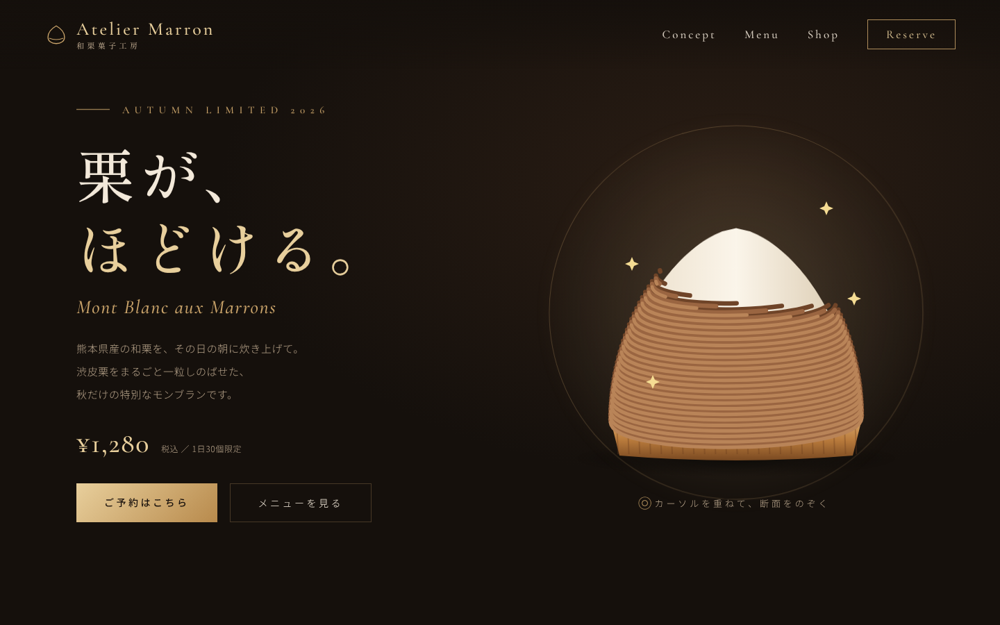
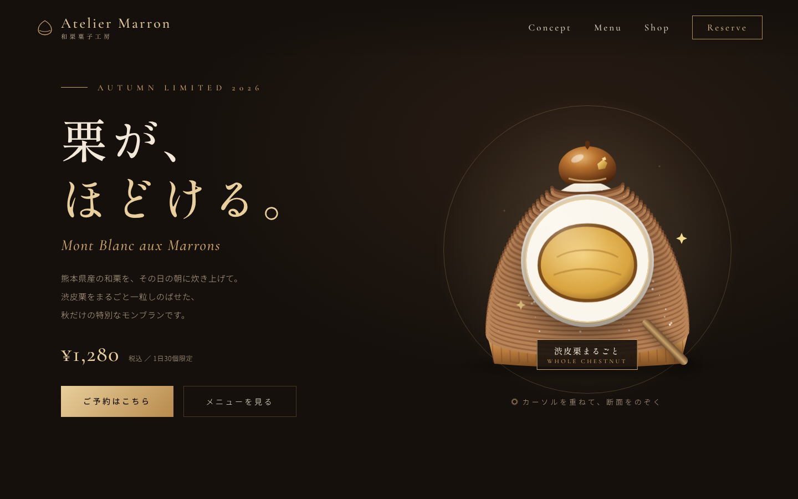
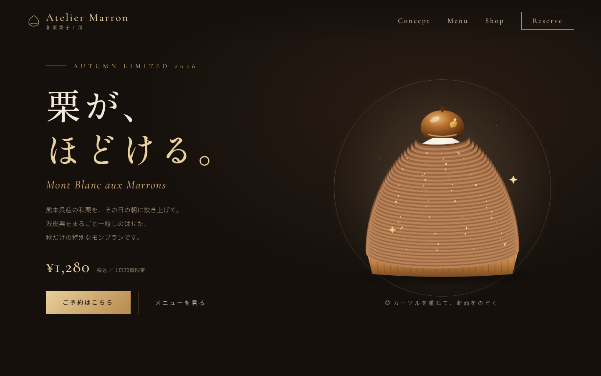
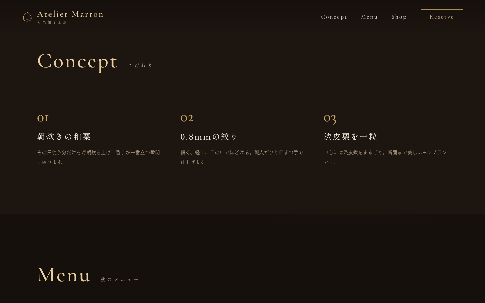
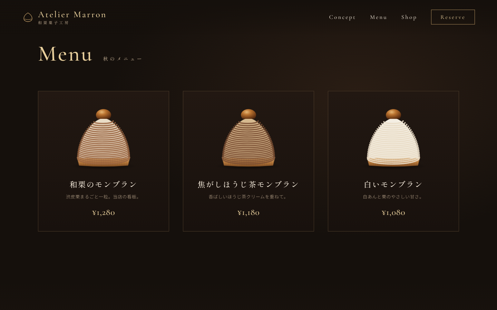
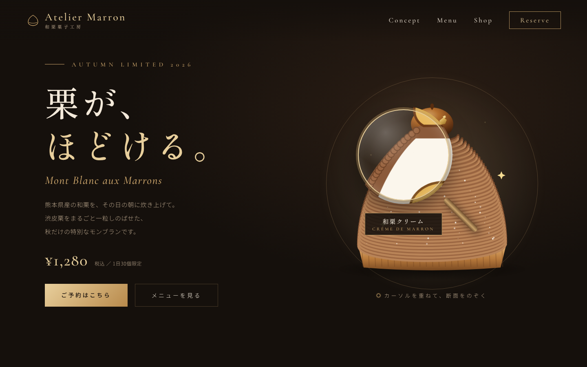
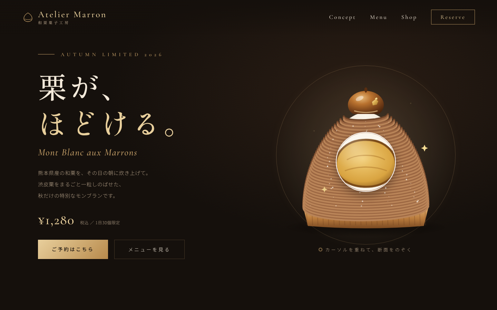

index.html
style.css

動く。のぞける。
AIで、つくった。
Codex × 日本語プロンプト
🔒 atelier-marron.example/
中身が見える！
Concept
Menu
Reserve



COMPLETE GUIDE
Codexで作る
“動く”パティスリーサイト
日本語で指示するだけ
HTML / CSS / JS
完全解説
ROADMAP
全体の流れ
Codex
※画面はイメージです
何を作りましょう？
プロジェクトを選ぶか、新しく作成してください
Codexに依頼する…
ローカル
GPT
新規プロジェクト
プロジェクト名
フォルダ
フォルダを選択…
キャンセル
作成
POINT
準備はこれだけ
📁 1プロジェクト＝1フォルダ
✏️ 名前はあとで変えてOK
🔁 何度でも作り直せる
Codex / Add Canva image magnifier demo
※画面はイメージです
Codex / Add Canva image magnifier demo
※画面はイメージです
栗のモンブラン専門店『Atelier Marron』のLPを作って。黒×ゴールドで高級感のあるデザイン…
index.html
+0
−0
✓
変更を適用しました
3 files +372
index.html
style.css
script.js
生成されたコードの中身
style.css
STROKE-DASHOFFSET
dashoffset:
1.00
34 STRANDS × DELAY
localhost:5500
線を“描く”
×
時間差
=
絞り出し
LAYER 1
外観の絵
LAYER 2
断面の絵
LAYER 3
丸い窓（clip-path）
style.css
script.js
localhost:5500
2枚重ねて、丸く切り抜くだけ
Codex / Add Canva image magnifier demo
※画面はイメージです
✓ index.html を作成しました（+372）
✓
レンズを 220px → 240px に拡大
✓
縁をゴールドのリングに変更
✓
のぞいている層の名前を表示
+18 −4

◀▶
BEFORE
AFTER
PUBLISH
あとは公開するだけ
RECAP
おさらい
あなたのお店も、
動かそう。
保存して、あとで作ってみよう
🔖 保存
👍 高評価
🔔 チャンネル登録
01
CODEX TUTORIAL